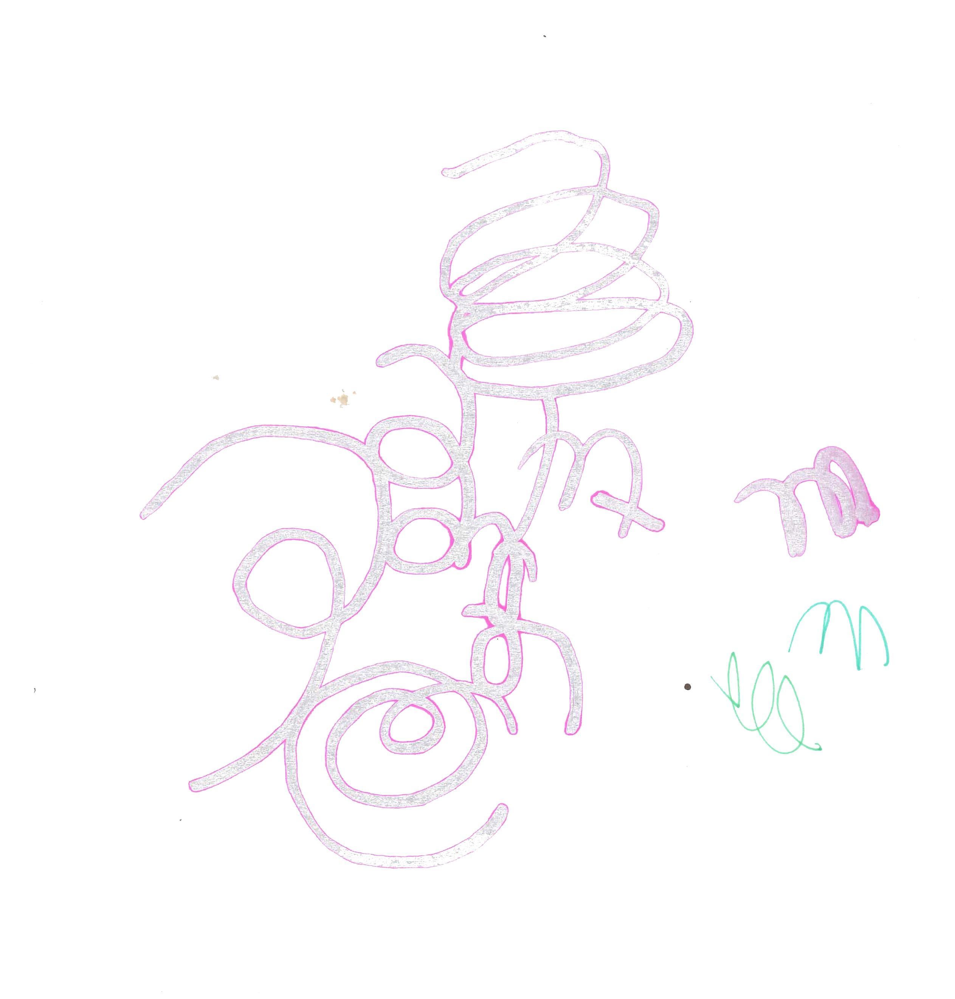
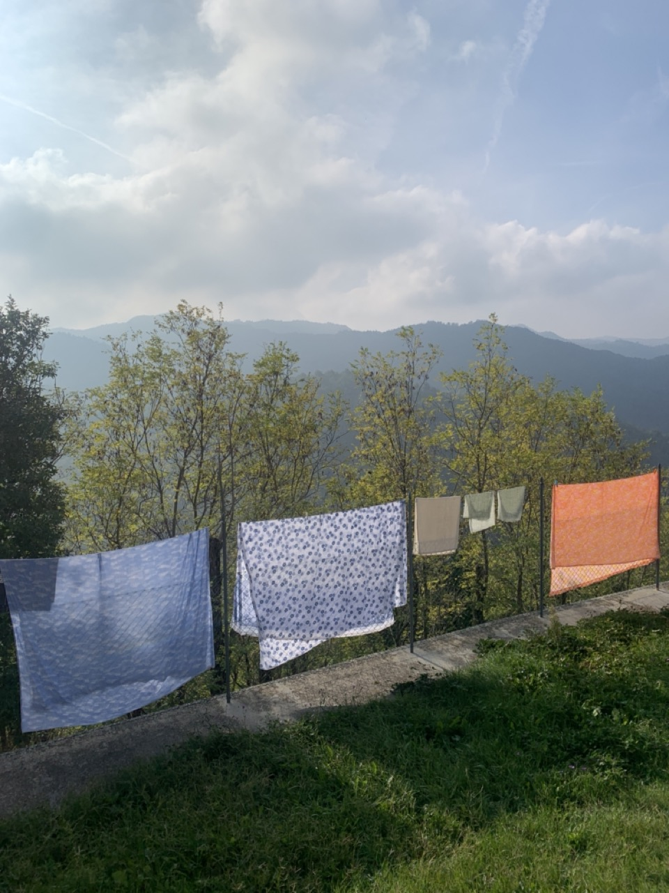
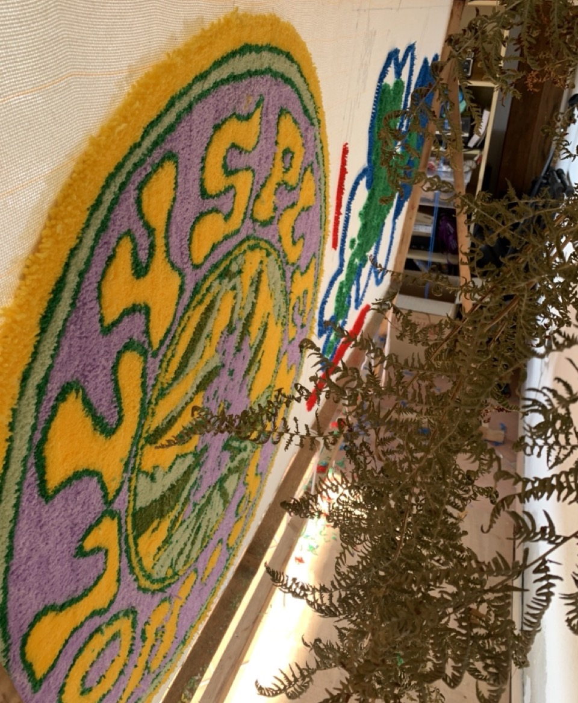
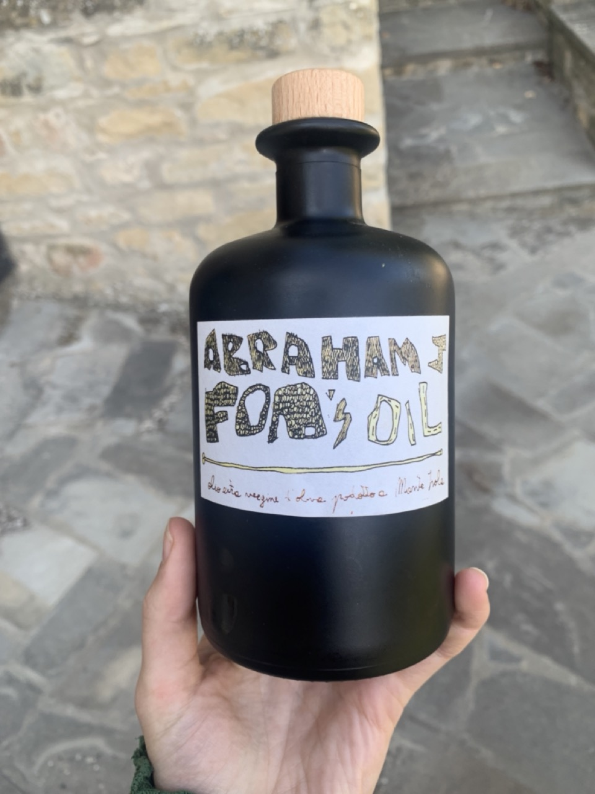
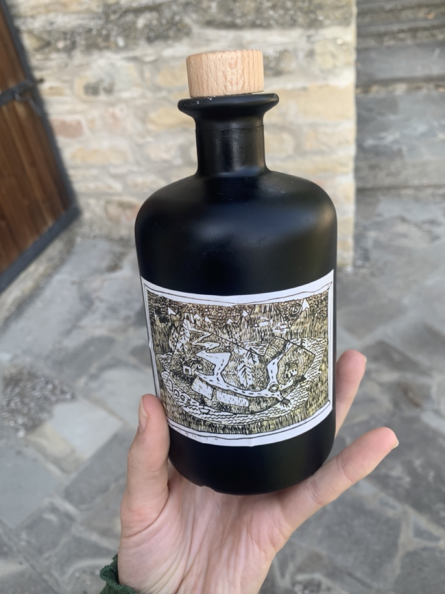
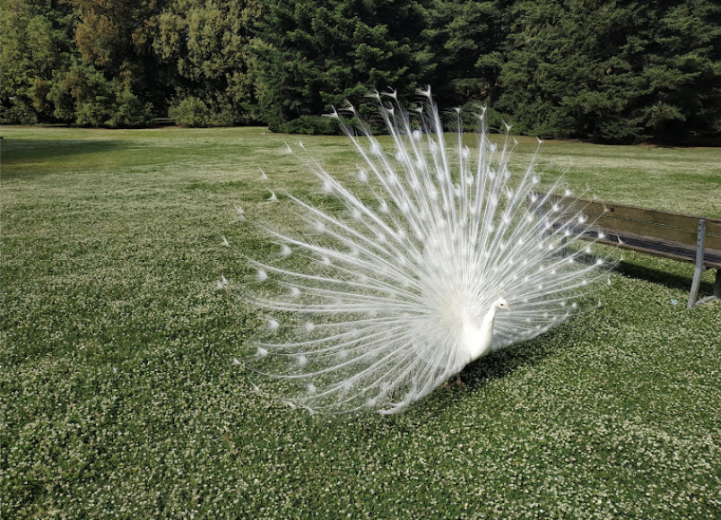

a 2 hour walk to the lavander field to start the day
got lost on the way back and realised we were just 300 m away. the place where we thought we were lost was a place we had been to before mamy times before just accessed it from a different direction
waking up and seeing a forest
day 20 hello
the day started with reading fragments from a book Benni gave me. it's by Brandon LaBelle and the book is about voice and mouth. the section i read was called kiss suck lick. the mouth as an erotic organ and it made me miss intimacy and kissing
brave enough to build your own world
omg i'm listening to music again, partially thanks to sharing playlists with Greta
wrote a recipe entry for the upcoming recipe book by ilo. my recipe was for popcorn
a day as a big time curiosity
Domenique Dumont released a cover for La Dolce Vita 2 days ago and i listen to it while i fry an egg and spread some pesto on a cracker
while cooking lunch, Anas is listening ot kino pachka sigaret
when someone is sad in the house, it can be felt throughout
boundary challenge day 2. journaled about biggest fears of boundary setting
i guess things begin by just doing them and figuring everything along the way
figuring out js and love-hating it
the most beautiful walk in the evening, sunset on the holy mountain with smooth, thick clouds, mashed potatoes for dinner.
bribi, the cat, followed us on our walk. looked like she'd never been so far. she had a mix of fear and curiousity in her eyes. i had never seen her run so fast. i bent down to pet her and she hid in the cave formed by my butt and thighs. then she put her head underneath the gap where my butt nears down to the ground, towards my back, to explore while keeping herself in hiding.
green broth and knödel by ira starting off with a beautiful broth in purple green black blue and maybe a bit of red?
everyone is playing the empty hammer game
sometimes i play as well but I love watching more. Maybe because i’m scared to take risks? but i also just get a bit bored. also with fussball. anyway, i should do it next time. generally, i wonder why i don't like board games too much
- do you write every day?
- at least a sentence per day
subscribed to a challenge for learning to set boundaries from the insight timer app :)))) i like it
yellow morning light!
day at the market. 10 eur for the most 2 jackets and a hoodie which has a puppy sleeping in a hammock and Do Not Disturb on it
i got 2 new tattoos from Andre and am very happy about them. one of them is a butterfly (some people think it's a ladybird) underneath my left ankle and the other is a drawing that looks like two persons passing a ball from one to the other, but Andre said it also looks a bit like a touch about to happen
darkroom superstar magic good time wowowowoww. we printed on expired photo paper and discovered that the image can be exposed through from the other side of the paper?!??
we were at the darkroom until 00:30 i had the bestest time
everyone is in the garden making tattoos on each other and some other people are waxing their legs and arms
what is API? what's uppy?
andre has a crazy amount of different kinds of pens. trying out one of them
moved into a new room. changing settings feels nice and familiar
had a nice call with miss G!
walk to the river
and the dark horse
time warps and circles
finally understanding korg minilogue. most things seem easy when learned
day 14! what will you bring?
so far
day1 color: lightgoldenrodyellow
day2 color: azure
day3 color: orchid
day4 color: greenyellow
day5 color: lightsalmon
day6 color: papayawhip
day7 color: lightgrey
day8 color: chocolate
day9 color: color: powderblue
day10 color: peachpuff
day11 color: palegreen
day12 color: palegoldenrod
day13 color: lavender
day14 color: paleturquoise
coming up, learning progress on korg minilogue
oo oo oo o oo what happened?
just keeping count of days, not making it complex, day 13
oh my god the return of the chestunt lady this morning, also mr Billi came by. the chestnut lady raises her voice when she speaks like there is no tomorrow. i'm in love with that spirit
most eventful day so far, must add must add must add
there was a bug in chiara's room. she asked me to come help her get it out of there. as i was doing it, she was holding herself on the butt, as a kind of fear reflex. 'so the bug doesn't have access to get inside' she said
i love the sound of ilo tufting and her playlist in the background. the tufting gun vibrates through the house and the garden
we all bought leather jackets in the flea market today. i wonder if the talk about watching the matrix yesterday planted some seeds in our collective subconscious
the beauty of not knowing a method, doing it anyways and not caring about the outcome. recipe for making great things?
my english is getting worse and worse. i didn't know how to spell vulcano today. i wrote volcanoe
i'm called pau(pau) here. then there is anas, pongie, poni, ilo(stylo), ira, benni, angie, enri, favi. it's a land of nicknames. someone says the shortened names are for time optimisation
today is apparently a day when all the hunters gather to hunt for wild pigs and i find it lame, we speak about hunting, the purpose of it and of how it's one of the main activities(for men) of this region as we are on the way back from the flea market
there is a story about mr billi (the original owner of the house). he recently realised how weird hunting was and stopped doing it. but there is ths story from years ago. when he was about 18 (he is now around 70), he remembers holding a gun in his hand. there was a bird singing loudly and he turned to it and bam he shot it. a girl standing next to him screamed so wildly and loudly he still remembers the sound of the scream vibrating through his ears
orange moon!
a game with nails and a tube-hammer and a tree
the bzz bzz and the swoosh swoosh
i wake up and i feel good because i know we'll make something today. something anything, just keeping going little by little. then some more in depth conversations and work on the bigger body of the project, but i will at least make a little code of line, little carve into wood and play one piece of sound
also hope we'll go down to the village today. i miss seeing other houses
each piece of clothing that gets a stain gets printed over
today we discovered that the scary sounds from the bushes were made by chestnuts falling
we did a bodily movement activation imagining we are one big collective seaweed
a long day of making sure everyone is on the same page ending with a movie from alaska mixed with the italian music genre lento violento
spending every morning with the bees bzz bzz
like yesterday, a flock of birds suddenly fly over making a silent vibration in the air, then the sound of the hunters' guns from far away mountains follows. trying to accept that secquence of sounds
i feel magic when i start a day with writing. 3 long breaths, a body scan and writing down. it also makes me feel better now to put it all here. the shelving unit of thoughts
things change. someone got a haircut, we made a huge screen for screenprinting and failed while printing it, but wow it didn't matter at all. it felt good to use my whole body for it
Pongie was scanning the very big screen
we decided to carve the wood and collect the clay and to join the forces of wood and clay
dinner turned into a big dance party
for dinner we made tagliatelle. and it's never been that gooooooood! turns out there's a trick when cutting fresh pasta (you cut it folded). i told everyone a story of how when we made fresh pasta with Ale we cut the pasta-dough in full length and there was a common appreciation of putting in that effort
songs from yesterday as written down on my notepad while dancing
the blaxk dog voetual
sour wal x
small dick
keep the fire burning gwen
esg not the first rodeo
a week of having been somewhere. there must have been a study conducted around that. what does it change? does it stop the initial fall in love moments of a place? the heightened feelings. the everything is important in a good way feelings
the sun is hitting my face and i dream of sweating and wearing shorts
the local hunters make this space sound like a battle field sometimes
we went for a morning walk and met a chestnut lady with her 2 friends. i can still hear her laugh.
today is ilo's bread session. we had to imagine a dinner party and the objects that would be present in it. i made a snail tray, but it ended up feeling like an octopus slime
today was a button
we had a duo stream between 2 diaires. one was from a bus, the other from the music studio at habitat. there was a lot of delay. in the end we agreed to do it again and greta said one day we will fix the delay
poni is the pizza master. they have a pizza oven here, since ca de monti used to be a kind of a b&B. he said he learned how to do it the proper way through instagram. which i thought was a great surprise
in the end we ate about 20 pizzas and i couldn't help myself but fall asleep before 23:00
around the dinner table conversations turned from english to italian. while that made me a bit bored, it was also nice to be in a social situation where i didn't feel like i had to keep up some conversation but could sit there quietly without the need to interact but just observe
dear diary, i could easily skip a day with no noted down updates of what is happenng, but that wouldn't feel right. though i feel less and less like being in front of the computer
we had a productive day of cleaning and shopping for the next week of putting something into our bellies. i like that a big part of being here is living here. i am also losing my words a bit, tuning into all that Italian going on around me. i feel like drifting a lot more into drawing than wording
anyway it was beautiful to head down from the mountain and to remember that there is a whole world going on down bellow. to stop by a local coffee shop to get that morning coffee flowing through me, to check in at the local market and buy a lot of fruits and vegetables. we had a gigantic salad lunch today and that felt very good. less dough, more leaves
we are going more into spirals and tails, thinking about neverending publications, tentcularism and post-structuralism
birbi the cat had a massive diarrhea episode this morning and all i can say is that i'm happy i wasn't in the cleaning team. someone said she might have eaten a lizzard
on the way from the town we were listening to an italian punk band called cccp, and i want to note it here before i forget it
also some song to remember is innerem auge by battiato. meaning the inner eye
at dinner when we discussed our spiraling ways of being here someone said 'it's a bit like we are making pasta', i'm not sure what it means in relation to this, but it felt important
before dinner we went back to the holy mountain with chiara to look at the sunset. i still can't believe we're here, surrounded by the mountains. we heard some growling noise again and before it got truly dark, we decided to leave. both of us got scared again
o! i have now been here for a week
at dinner Andrea read us a passage about mushrooms and webs. apparently Andrea is also known as Foa which in his dialect means a leaf
i never really felt like screenprinting unless it was to do with transferring something to textile. suddenly i feel very intrigued by it. we are taping things on the screen with Jacopo to see if it works. tomorrow we want to make a double tail
now i'm sitting in a room where Enrico is djing, i feel tired and my eyes are slowly shifting downwards, but i also want to keep on going. but i also dream of waking up magically early to go to the mountain and check in with the local soundscape
at 9:15 we sat on the grass in the garden. 5 new bodies have joined the morning ritual of listening to sound of the Apennini bumps
i don't fel like being on the computer at all today but i keep on wanting to note things down. there must be some mobile sublime github desktop version?
just before lunch we were collectively reading a text by Lepecki about the body as an archive. that was so nice. reading and then pausing after each paragraph to recap and briefly discuss, summarise, see if we are all on the same page
the text got me thinking of the 'paranoic' human need to save, archive, note down. i think of it while doing it
speaking of paranoic, i went for a walk on a path. there are 4 paths to choose from. i was supposed to go to the antenna aka the holy mountain, as they call it here, but i took some other road. ended up walking until starting to hear some weird noises from the woods. someone told me there are a lot of wild pigs here. on my way back i ran a little bit, hoping no one was seeing me do that
my favourite part was looking at the now not so full moon and watching clouds go in front of it. then realising we were all seeing the clouds differently. for some it was the dark space around the clouds for some it was the light space within the clouds that were the clouds. i actually have no clue how to explain it, but the talk was about inverted space
important from chiara
Paola & Chiara - Vamos a Bailar (Esta Vida Nueva) https://www.youtube.com/watch?v=Wzr0Tb81XtE
the color of the day is light salmon
i woke up with a sentence in my head: always as if for the first time
in the mornings, besides the heightened sensing of sounds, i have started to smell smells more. there are 7 types of peppermint around Ca de Monti
i sneeze and it kicks agains the hills. then comes back to me
i am thinking of the ability to shift the course of happenings to suit your wishes for adventures and explorations. self-agency self-agency self-agency self-agency
Yvonne Rainer's Feelings are Facts. what was it about actually?
today we will go over the infrastructure of Habitat. i wonder what's that all about, but i like the word infrastructure a lot and i remember the first time i found out about this word. it was close to the moment of finding out about the word enginering
oh my god. everything is coming together through a lizzard's tail
the night is covered in a fog. there was a shadow of someone out in the garden, recording the fog apparently
gigi d'agostino l'amour toujours
a hole in the umbrella
an ant carrying a flower and a piece of rice
something appears right before your eyes, so it's a bit blurry to begin with, you need to step back to see it really
i woke up with a stinky beetle walking next to me on the pillow. it reminded me of a time when i was about 8 years old and found one stinky beetle in my ear
on the fridge in the kitchen it says 'everlasting'
i am finding so many sources this morning. one of them the psychophore books by Thomas Cap de Ville
yesterday susie showed me a book she made for birbi the cat. it had a tail of a lizzard taped onto the last page. she said she found it in the garden. this morning i went into the garden and i saw a lizzard without a tail
we spoke about the flow of people at Habitat and Pongie mentioned that the pace and the shape changes with each new person arriving. i felt it a lot yesterday as well with 4 new arrivals in the shape of humans. the core remains the same, but the surface shifts
yesterday i remembered to see the ceiling of my room. i took a photo but it's not too good and probably best to describe it with words. it's a wooden grid on top of what seem to be tiles.
someone arrived with a tape recorder, which to me is crazy, because i was looking into buying one. it's similair to how i was looking for that zoom recorder.
we went for a walk down to Tredozio, to see a local archive. there was a man with a tattoo of the coat of arms from Tredozio. on the way back we found a field of mushroom paths. we picked up some called porcellini to be cooked today or tomorrow.
on the way to Tredozio, which took us about 40 mninutes, we were talking with Chiara about what got us into making in the first place. also of what we did in the art academy for our bachelor's. she told me she made a lizzard that had 2 tongues. i also remembered just now that Chiara doesn't have any tatttoos, but if she would, it would be a tongue on her palm
rarely am i capable of remembering the time or the date here, but i know that it is a saturday and it is a full moon
Poni tells us to get big arm muscles you have to chop wood. that's what he's been doing for the past 3 days
when i arrived to Italy, i remembered that upon my previous arrival to Italy 5 years ago, I dropped my phone in the airplane whle waiting to head out from the plane. it hit a metal knob on the ground and the screen shattered. i cried a little bit, but quickly composed myself, as i was happy to have arrived. I was also heading to a residency back then. during that residency my laptop also broke. i had the best time in the world there and i remember concluding after the trip that when technology breaks, good things are happening.
this night i discovered that the backside of my phone, made out of glass apparently, is completely shattered
the story of how everything fell into place for all of us to be here now is miraculous
i am looking at hills behind hills behind hills behind hills
there is a beautiful cacophony of sounds in the morning. wasps with the sound of electric humming, a bird, one bigger and many smaller ones, dogs in the distance and silent voices from the forest, maybe they're there, maybe they're not
i would like to place air fans inside a bowl of salad
but it wouldn’t mean much
the daily act of keeping things written down is re-calibrating my mind
each morning there are different sheeets hanging over the fence, getting warm by the sun
someone was playing music in a room i was passing through. i passed by it and into another room where another sound, perhaps from an electricity generator, took over the sound from the first room. it was exactly the same tone, just different texture
Jacopo, Ilo and Alecio are making a cake for Mimo in the shape of an ipad. it's Mimo's birthday tomorrow
today is quite slow. we all seem to be focusing on finishing tasks from the real world before diving deep into the new world tomorrow
some of us sit in the wifi room, which is a big room with many tables, a wooden type attached to a wall reads Habitat. the library, the printer, and 2 sofas exist there as well. dowsntairs, in the dj room, Ilo is tufting, Enrico and Mimo are drawing
you can exit the house, walk a few steps and feel like somewhere else entirely
i asked Enrico for his zoom h6. For 2 weeks I have been wanting to try that recorder. or h8. and both of them are here
Andrea brought along olive oil he made himself
 i feel like i want to do everything at the same time, it is never boring here, there is always always always always always the space and tools available for making up something to do, someone to join, something to start, something to invent, somewhere to go
it's crazy to realise that everything ends. i forget about it intentionally until at least the 1st of november. i will go find brb the kitty now to play with
we made 600 gnocchis
i started my morning with a walk in the forest. there are trees all around so it wasn't difficult to find. it's easy here to wake up and go somewhere. the wifi here only exists in one room and that i'm very happy about.
only in the morning it has been more possible to grasp where i am, though still quite impossible. it's a compound of 2 buildings and a little church. very very tiny, the size of a shed. when we arrived Jacopo told me that they call this place (Ca' de Monti) a village because there's a church
it was so great to read Jacopo's thesis alongside having some coffee on the terrace. the urge for a space lke this was born in his head. i learned that Ca' de Monti translated literally means house of a mountain and there were many things which i wanted to underline and i'll do that as soon as he confirms i can keep this copy
i was playing my little pocket operator today before lunch and i want to try to connect it to the speakers later
here i feel like a lot of feelings, thoughts, ideas of things are coming together. i can remember looking for a place like this a long time ago
this day has very much revolved around flies or they around us. there is one trying ot get into my hair right now
there is a telescope
Poni, Pongie (Jacopo) and Enrico will go get some wood later for the fire. i tell them i want to go with and they tell me there is a man with a permanent cigarette in his mouth who helps them gather and cut the wood
we went for a 45 minute walk, but it was way longer. there are many mushrooms on the paths that i haven't seen before. andrea told me he brought a book with him about plants that he will study later for the next walk
everyone listens to amazing music here
on the walk friendly faces tell me there will be a rap battle and a tattooing session tonight. they ask me if i ever tried tattooing and they say they have some fields of practice on their skin, where other people have done their first tries at getting ink under skin
cooking seems to be ingrown in everyone's genes here
the queen of the house is Birbi (i'm not sure that's actually how you spell it), i always call here brb.
come back brb
i got off the bologna airport bus and cried from happiness. it was warm and sunny and my skin didn't expect that
in a park, a crow crowing while sitting on a thin branch of a tree. the whole body of the bird moves with every croaking call
a teenage couple making out intensely on a park bench. i guess italiano style
one's own life becomes interesting when written down
there is a fountain of turtles. Alejandro wrote a beautiful message to me about starts and ends and i'm feeling it next to the fountain of turtles
i left the park with many bites. it's been a few months since i had another mosquito bite. then two mosquitos were mating in front of me. probably they were the ones that had a sweet bite of my blood
walking through the streets of bologna, i see many places that i want to revisit. i try to remember them for when i come back. a nice cafe called baracca e burattini. that doesn't sound real.
there is a festival called Robot in town and i'm wondering if i should just stay. Lyra Pramuk will play tomorrow
this diary is born as a chain-reaction to a diary i am reading from greta
i want to go to parco bucci in Faenza, a town i have to take the train to from Bologna. from Faenza i'll continue on to Tredozio and i'm not sure i'll have time for parco bucci, but i need to come back for it. apparently there are these peacocks there
i arrived at 18:30 and i started the trip at 6:30, so it took me 12 hours to go from Berlin to Ca' de Monti
Jacopo picked me up in a car and we went up the mountain and finally came to a house i remember seeing in google maps. he showed me around, i can barely remember which room leads to which. he says i have to see the core of Habitat which is the people. we go downstairs towards music, there are a few friendly faces, two of them playng back to back on a dj deck. some really great music. the rest of the faces had apparently gone on a walk to a river
Federico aka poni comes to say hello while i sit outside. i had previously seen him on a call on jitsi. he tells me about their trip to a river and that apparently they went to a small volcano. the smallest in europe. that apparently was a joke and it's not a real volcano, but something else. something to do with methane gas. could it be? i can't wait to see it
they tell me they had a big pizza night yesterday, and that we will have locally picked mushrooms for dinner today and that a lot of talk here goes around food
not all of the residents have arrived, so i have 2 days of properly arriving before the residency begins.
dinner was so sweet and delicious.
many things connect here and it feels like this is a place i'd always wanted to be at